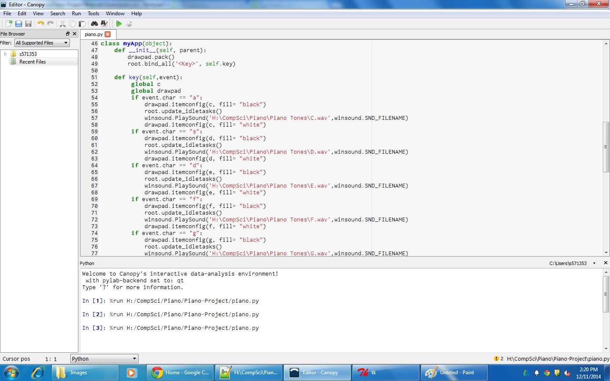

The concept of the Piano Project is pretty simple (coding it, however, was not). When you press a key on the keyboard, it's correspoding key on the piano changes colors and it plays the note sound associated with the piano key.
This project was made using Python, the language that created the functions, Tkinter, a Python add-on that you can use to create a GUI, and Audacity, which provided the .wav files for the piano note sounds.
This is just the piano without any keys being pressed.
This is the piano whenever a white key (F) is triggered by the keyboard key "f" being pressed. (Note: The sound is also playing while the keyboard key is pressed and the piano key is undergoing the color inversion)

This is the piano whenever a black key (D#) is triggered by the keyboard key "w" being pressed. (Note: The sound is also playing while the keyboard key is pressed and the piano key is undergoing the color inversion)
The code in the picture above is creating the GUI for the piano. Line 7 creates the canvas widget in Tkinter. Lines 10, 11, and 12 create the outlines of the basic parts of the piano, such as the black box, the white box that contains the watermark, and the background behind the piano keys. Lines 16 and on create the keys for the piano.
The picture above displays the code than deals more so with the Python functions.
Within each If Statement, four things are happening in a paricular order: